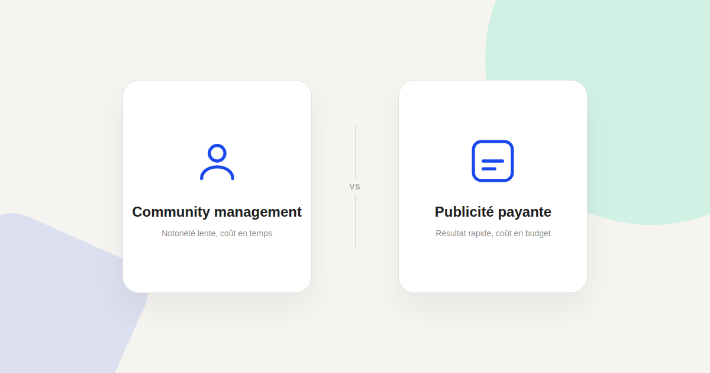
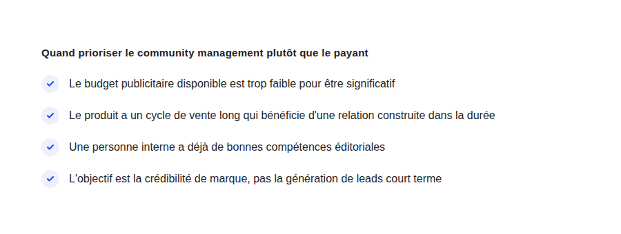

Community management vs publicité payante : où mettre l'énergie limitée d'une petite équipe
« On devrait poster plus souvent » revient dans presque toutes les réunions marketing d'une petite structure — sans qu'on se demande si c'est vraiment le meilleur usage du temps disponible face à la publicité payante.

La question « organique ou payant » revient sans cesse dans les petites structures, souvent tranchée par habitude ou par préférence personnelle plutôt que par une analyse de ce que chaque approche apporte réellement compte tenu des contraintes propres à l'entreprise. Les deux ont un coût réel — l'un en temps, l'autre en budget — et le bon arbitrage dépend de laquelle de ces deux ressources est la plus rare chez vous.
Ce que le community management apporte vraiment
L'animation organique construit une relation dans la durée et une crédibilité de marque qu'un clic publicitaire seul ne produit pas : un abonné qui suit une marque sur plusieurs mois développe une familiarité qui facilite la décision d'achat au moment venu, en particulier pour des cycles de vente longs. C'est un investissement dont le retour se voit rarement avant plusieurs mois, ce qui en fait un mauvais choix si l'objectif est un résultat rapide.
Ce que la publicité payante apporte vraiment
Le paid offre un contrôle direct sur le volume et la vitesse de résultat : avec un budget suffisant, on obtient du trafic et des leads dans les jours qui suivent le lancement d'une campagne, contrairement à l'organique dont l'effet se construit lentement. C'est le choix logique quand l'objectif est un résultat mesurable à court terme, ou quand l'équipe manque de temps pour produire du contenu régulier.
L'arbitrage selon la contrainte réelle
- Contrainte de budget plus forte que la contrainte de temps. Une petite structure avec peu de budget mais une personne capable de produire du contenu régulièrement a plus intérêt à investir dans le community management, où le coût principal est le temps déjà disponible en interne.
- Contrainte de temps plus forte que la contrainte de budget. À l'inverse, une équipe débordée mais avec un budget mobilisable a souvent plus à gagner à investir en publicité payante, qui ne demande pas la même charge de production continue.
- Objectif de notoriété de marque vs objectif de génération de leads. Le community management sert mieux un objectif de crédibilité et de reconnaissance de marque sur la durée ; la publicité payante sert mieux un objectif de génération de leads mesurable à court terme.

Le piège du choix par défaut
Le vrai risque n'est pas de mal choisir entre les deux — c'est de choisir par habitude ou par confort plutôt que par analyse de la contrainte réelle. Une équipe qui poste sur les réseaux « parce que c'est ce qu'on fait toujours » sans mesurer l'effet, ou qui met tout son budget en publicité sans jamais construire de présence organique durable, se prive dans les deux cas d'un arbitrage qui pourrait être bien plus efficace pour ses ressources réelles.
Une combinaison plutôt qu'un choix exclusif, dès que possible
Dès que les ressources le permettent, les deux se renforcent mutuellement : une présence organique cohérente améliore la perception d'une marque déjà vue en publicité, et la publicité payante peut amplifier ponctuellement un contenu organique qui a bien fonctionné. Mais tant que les ressources restent limitées, l'arbitrage clair entre les deux reste plus rentable que de saupoudrer un peu d'effort insuffisant sur chacune des deux approches.
FAQ
Combien de temps avant de voir un effet du community management ?
Il n'y a pas de délai garanti, mais un effet perceptible sur la notoriété de marque se construit généralement sur plusieurs mois de publication régulière et cohérente, pas sur quelques semaines.
Peut-on externaliser le community management pour une petite structure ?
Oui, mais le coût externalisé doit être comparé honnêtement au coût d'opportunité d'un budget publicitaire équivalent avant de trancher, plutôt que d'être vu comme une option automatiquement moins chère.
Faut-il arrêter la publicité payante pour investir dans l'organique, ou l'inverse ?
Ce n'est pas nécessairement un choix binaire définitif : c'est un arbitrage à revoir régulièrement selon l'évolution des ressources disponibles et des objectifs du moment.
Envie d'un arbitrage clair entre organique et payant pour votre équipe ?
Pour aller plus loin, voir la page SMA, et la page Comment je travaille.
Pour continuer sur ce sujet.